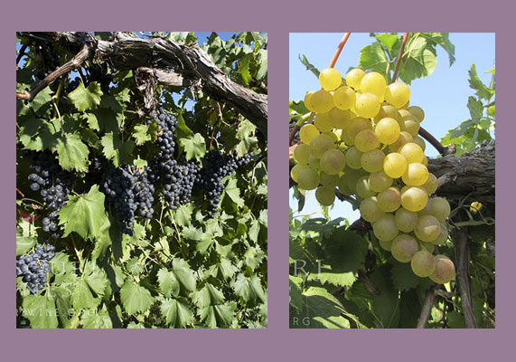

VineReviews Cooper's Hawk
VineReviews shines a spotlight on Cooper's Hawk Winery. Cooper's Hawk first opened in 2005, and more than 10 years later has established itself as a purveyor of exceptional wines and sophisticated food. The concept features a tasting room with knowledgable attendants and an upscale dining that, in Kansas City's Plaza location, usually is packed with people eager to eat, drink and be merry.
This week, VineReviews tastes: